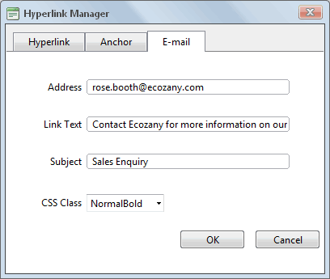

Adding an Email Link
How to add an email link to text or an image using the TelerikEditorProvider for the RTE. Clicking the link opens the user's email program with the selected email address in the Send To field.
Tip: If you type an email address with a recognized extension directly into the Editor it will automatically add a "send to" link to the address.
- Highlight the text/object for the link - OR - Place you cursor where you want to insert the link.
- Click the Hyperlink Manager (CTRL + K)
 button. This opens the Hyperlink Manager.
button. This opens the Hyperlink Manager.
- Select the E-mail tab.
- In the Address text box, enter the email address. If you have selected a recognized email address it will be displayed here.
- In the Link Text text box, enter the text for this link. Note: This field is not displayed when adding a link to an image.
- In the Subject text box, enter a subject which will populate the subject field of the email message.
- Optional. At CSS Class, select a class for the link - OR - Select Clear Class to use the default class.
-
Click the OK button confirm.

Adding an Email Link